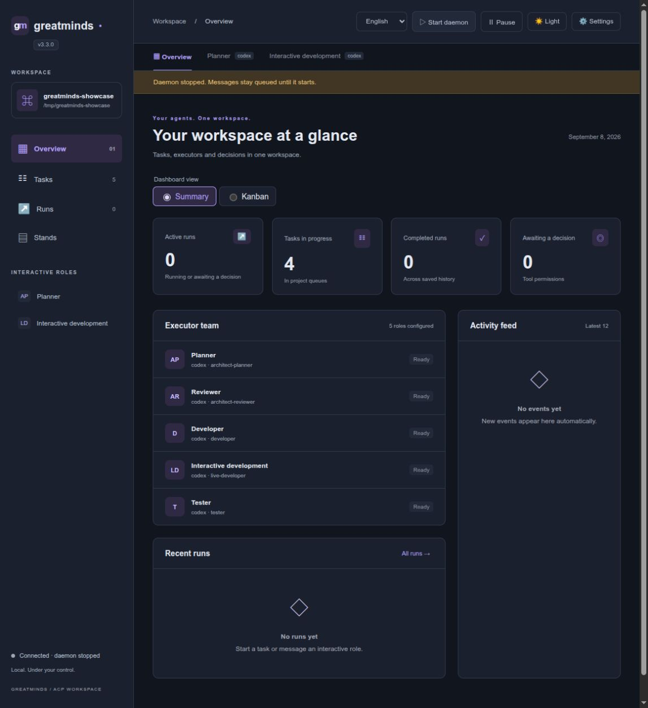
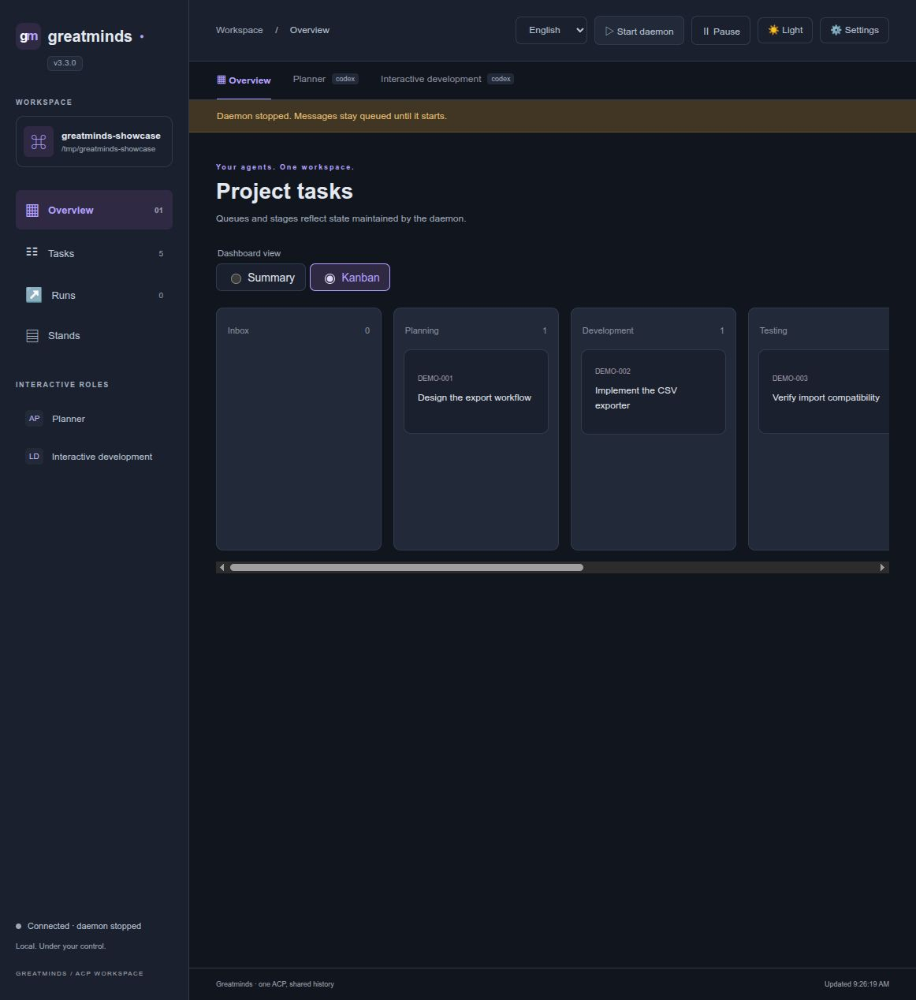

Local web workspace¶
Run the browser workspace for an initialized project:
greatminds web --project-dir /path/to/project --port 8765
Open http://127.0.0.1:8765. The UI ships inside the Python package: no Node.js,
frontend build, CDN, or separate web service is required. One server manages one
project. Use another port for another project; --port 0 selects a free port and
prints its URL.
By default the command attaches to the project's running daemon, or starts one
if an execution configuration exists. --no-daemon opens the UI without starting
execution; its toolbar can start the daemon later. Closing a browser tab or
stopping the web server never stops the daemon. Any web instance or CLI can
inspect and explicitly stop the same project daemon. No systemd installation is
required. See daemon lifecycle.
There is no application authentication: no login, cookies, or access tokens.
The default bind address is 127.0.0.1. Set --host 0.0.0.0 to listen on other
interfaces, and supply any desired access controls in your own reverse proxy.
Proxy the application at /, preserve the external Host, and forward requests
to its local port. Browser writes require the same origin; this is not a login.
Workspace controls¶
- Overview: active runs, task queues, configured roles, recent activity, and pending tool permissions. Permission decisions use the daemon's existing broker.
- Tasks: searchable queue cards and the underlying task YAML.
- Interactive tabs: every binding with
scheduling: on-demandappears as a role tab. Create or select conversations, send messages, interrupt a turn, or close a conversation. History survives page reloads. Retried delivery uses the same request ID, so an uncertain HTTP response does not duplicate a turn. - Runs: select batch or interactive executions; inspect public agent messages, tool activity, command output previews, results, and protocol metadata. Cancel active runs or request a retry through the same controls as the CLI. A retry remains subject to daemon admission and workflow rules.
- Toolbar: start/stop the project daemon, pause/resume new runs, and edit settings. Pausing dispatch does not interrupt existing runs or their open conversations. Use the turn/run interruption controls to stop work already in progress.
Settings edit coordination/execution.yaml. The form exposes role bindings,
harnesses, model/mode, permission policy, timeouts, and concurrency. The full YAML
editor covers commands, workspaces, accounts, and other execution options. New
agents and roles are staged until Save. Configuration validation runs before
writing; a stale browser cannot overwrite a newer saved version. Restart the
daemon to apply changes. Harness binaries and their credentials are configured
on the host as before; adding a manifest does not install or authenticate them.
Chat input and appearance¶
Press Enter to send a message and Shift+Enter to insert a newline. Ctrl/Cmd+Enter also sends. IME composition and held-key repeats do not submit. The composer and existing history nodes stay in place during background updates, preserving draft selection and manual scroll position.
Active conversations fetch updates more frequently than the dashboard and append incoming text progressively. The activity indicator remains visible during an agent turn, including pauses before text arrives; queued turns and permission or login waits have distinct labels. The indicator stops when the turn ends. Reduced motion preferences disable the text reveal and spinner animation.
Use the toolbar's light/dark theme switch. The first visit follows the system color preference; an explicit choice is saved in this browser for the same origin. The theme applies to the chat, dashboards, settings, forms and code previews. The version below the product logo identifies the running web server. Restart the web server after upgrading the package so its backend uses the new version.
History and storage¶
The browser reads the same filesystem state as the CLI and daemon. Viewing a page or reconnecting does not launch an agent. Dashboard requests are polled every 1.5 seconds; active chat requests every 350 ms; conversation event cursors avoid replaying earlier text. The UI renders the last 50 conversation turns; the existing conversation journal remains on disk.
New batch runs retain public ACP message and tool updates in
.greatminds/.runtime/activity/. These records are supplementary observations,
not workflow authority or proof that a task passed. Each run keeps at most 512
records and 256 KiB; individual records are bounded to 16 KiB before framing.
The UI labels truncated history. Known credentials and sensitive structured
fields are redacted; private reasoning and arbitrary ACP metadata are excluded.
Older runs without this journal still expose their existing state and evidence.
Command previews verify the existing daemon-owned output artifacts and display up to 8 KiB per stream. Missing or changed artifacts produce an explicit error. Reading output does not rerun the command.
Language¶
The toolbar offers English, Russian, and Simplified Chinese. English is the default. The browser remembers an explicit choice for its origin. Only interface labels are translated: prompts, agent responses, project files, provider messages and logs keep their original content. Dates use the selected locale. Switching languages preserves the chat draft.
To default all local projects to Russian for your user, create
~/.config/greatminds/web.json (or $XDG_CONFIG_HOME/greatminds/web.json):
{"language": "ru"}
Alternatively, launch with GREATMINDS_WEB_LANGUAGE=ru greatminds web ....
Allowed values are en, ru, and zh. An explicit browser selection takes
precedence over the host default. Restart the web server after changing its host
default; changing the interface language does not require a daemon restart.
Markdown and executor choices¶
Agent responses, including batch messages, render Markdown: tables, lists, headings, links, inline code and fenced code blocks. Streaming reconciles existing blocks so completed paragraphs remain stable. HTML is sanitized locally; embedded forms, scripts and images cannot execute. No CDN is used.
Opening execution settings automatically loads model and reasoning choices.
Bindings sharing an executor, workspace and model reuse one temporary ACP
connection; results are cached for one minute. Load models and reasoning
refreshes the choices on demand. Discovery opens a session without sending a prompt. The
installed executor must already be available and authenticated. Models come from
its advertised model selector, and reasoning from thought_level; no provider
model list is hardcoded. Choosing another model refreshes the reasoning options.
Unsupported reasoning controls are hidden. If discovery is unavailable, the model
ID can be entered manually; the runtime still validates it against the executor's
advertised choices and reports unsupported selections. Save and restart the
daemon to apply model, mode and reasoning binding settings.
Stands¶
The Stands sidebar page represents the project's existing singleton logical stand, which may contain several machines. A separate LLM Stand Keeper is not needed: the daemon owns leases, queues and deployment state; Ansible executes project-owned playbooks.
- Edit
STAND_HOST/STAND_USER, or named pairs such asSTAND_HOST_GPU/STAND_USER_GPU. A blank suffix selects the unsuffixed pair. Other environment values are preserved and are not exposed by the connection form. Save before checking access. Check SSH uses non-interactive SSH and existing known-host records; localhost checks local execution. It does not install dependencies. - Use your normal SSH config, keys and project Ansible inventory for access.
The page displays their locations and discovers project-local inventory files
referenced by
ansible.cfgincoordination/or.greatminds/. - Inspect/edit the profile registry, registered YAML playbooks, Ansible config and discovered inventory. Saves reject stale revisions. Validate profiles runs the existing registry/playbook doctor. Project playbooks remain responsible for machine topology and preparation.
- Queue a lease, deployment, release, expired-lease reclaim, availability change, or deployment recovery assessment. These invoke the existing CLI/domain operations and retain their task, worktree, role and deployment-evidence checks. Profile approval gates are not bypassed; profiles requiring an explicit approval token must be leased through the CLI.
- Inspect the active lease, queue, state transitions and operation receipts. Deployment logs are read from verified recorded artifacts, with an 8 KiB preview per stream and known environment credentials redacted.
Operator requests persist in .greatminds/.stand/operations.json. They wait when
the daemon is stopped and continue independently of the web server. A repeated
HTTP delivery uses the same request ID. If the daemon exits during an operation,
its uncertain outcome is marked needs_review and is not automatically replayed.
Inspect state and the deployment ledger before submitting a new operation. Stopping
the daemon itself interrupts its active operation; closing the browser or web
server does not. An operator request is explicit work and is not suspended by the
batch-dispatch pause control.
Display preferences¶
Use Settings > Interface size to choose Compact, Normal or Large. Text, buttons and form controls resize together. Changes apply immediately, including when the settings dialog is later cancelled; they are browser preferences rather than execution configuration. The normal size is the default.
The dashboard has Summary / Kanban radio controls. Kanban shows workflow queues, including empty stages; scroll horizontally to see further stages and click a card to inspect its task. Transitions remain controlled by the daemon; cards cannot be dragged between queues. Both interface size and dashboard view are saved in this browser.
The version badge below the product name identifies the running web server. Restart the web command after upgrading the package.
For a host-wide default for new browser preferences, set
~/.config/greatminds/web.json (or $XDG_CONFIG_HOME/greatminds/web.json):
{"language": "ru", "scale": "large"}
Saved browser choices take precedence over these defaults. Supported scale values
are compact, normal and large; supported languages are en, ru and zh.
Workspace preview¶
The screenshots below use a demonstration project with example task files.

